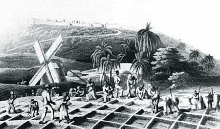

In 1655 the British conquered Jamaica from the Spanish and turned the island, like others in the Caribbean, into giant agricultural production centers. Sugar was the crop of interest for the British, while the Spanish before them had planted sugar throughout the West Indies.
 At the time,
sugar was traded for enormous profit in Europe. By 1700, the expression
'rich as a Jamaican planter' was a widespread colloquial description of
an extremely wealthy European. Due to sugar, British trade with Jamaica
alone dwarfed that with all of its American colonies. In 1773, imports
from Jamaica to Britain were five times that from all of the American
colonies combined. In many ways, American colonial agricultural served
as supply and support for the larger sugar trade.
At the time,
sugar was traded for enormous profit in Europe. By 1700, the expression
'rich as a Jamaican planter' was a widespread colloquial description of
an extremely wealthy European. Due to sugar, British trade with Jamaica
alone dwarfed that with all of its American colonies. In 1773, imports
from Jamaica to Britain were five times that from all of the American
colonies combined. In many ways, American colonial agricultural served
as supply and support for the larger sugar trade.
Growing sugar in Jamaican and elsewhere in the West Indies was enormously labor intensive. The original Spanish word for a sugar plantation was 'ingenio' or 'engine' seems more vividly to capture the nature of a sugar plantation. "This was as much industry as agriculture," writes economic historian Niall Ferguson (Ferguson 2002, 85). See the photo of a sugar plantation south of Trinidad from around 1850.
The Spanish began importing enslaved West Africans into the Caribbean to replace a Native American population that was ravaged by European disease and abuse. The British continued and expanded the practice in the largest slaving enterprise in history.

Both sugar cane and human beings were raw materials in sugar production. By 1750, 800,000 Africans had been shipped to the Caribbean by the British. Yet the death rate was so high that the slave population numbered less than 300,000 people (Ferguson 2002).